library(haven) # import Stata data and labels
library(dplyr) # data manipulation
library(ggplot2) # graphs
library(pscl) # zero-inflated models: zeroinfl()
library(marginaleffects) # predictions and marginal effects
library(cleanplots) # graph scheme
cleanplots_defaults()
# Center changes in continuous IVs on each observation's value (as mecompare does)
options(marginaleffects_contrast_direction = "center")
gss <- read_dta("https://tdmize.github.io/data/data/cda_gss.dta")
gss <- gss |> filter(year >= 2002 & year <= 2014)
# Data management: Christian (Protestant, Catholic, Christian) vs not religious
gss <- gss |>
mutate(notrelig = case_when(relig %in% c(1, 2, 11) ~ 0, relig == 4 ~ 1))
# Keep model variables; drop any missing data
gss <- gss[c("mntlhlth", "physhlth", "woman", "race3", "year", "college", "parent",
"faminc", "metro", "notrelig", "married", "age")]
gss <- gss[complete.cases(gss), ]
# Treat binary/nominal variables as factors
gss <- gss |>
mutate(across(c(woman, married, race3, college, parent), as_factor),
notrelig = factor(notrelig, labels = c("Christian", "Not Religious")),
year = factor(year))
# Zero-inflated negative binomial model
mhmod <- zeroinfl(mntlhlth ~ woman + married + poly(age, 2) + poly(faminc, 2) +
race3 + college + parent + notrelig + year |
woman + married + poly(age, 2) + faminc + race3 + college + parent + notrelig + year,
data = gss, dist = "negbin")6.11 Plots of Predictions & MEs
- There are many different predictions of interest in zero-inflated count models:
- Predicted rate
- For everyone in the sample (including the zeroes)
- For just those with observed counts (non-zeroes)
- Pr(zero count)
- Almost always of interest with a zero-inflated model
- Pr(specific non-zero count [e.g., 10])
- Pr(range of counts)
- Predicted rate
- See Stata Appendix A6 for code and discussion of various options
- Note the Appendix is highly recommended as the options for these models are tricky
- For the marginaleffects package in R, see the type of supported prediction for each model
use "https://tdmize.github.io/data/data/cda_gss", clear(cda_gss.dta | GSS 1972-2021 CDA - Categorical Data Analysis | date created 202
> 3)keep if year >= 2002 & year <= 2014(50,180 observations deleted)*Data management
gen notrelig = relig(106 missing values generated)lab var notrelig "R Not Religious"
recode notrelig 1 2 11 = 0 4 = 1 3 5/10 12/13 = .(18,560 changes made to notrelig)lab def notrlab 0"Christian" 1"Not Religious"
lab val notrelig notrlab
drop if missing(mntlhlth, physhlth, woman, race3, year, college, ///
parent, faminc, metro, notrelig, married)(13,623 observations deleted)*Zero-inflated negative binomial model
qui zinb mntlhlth i.woman i.married c.age##c.age c.faminc##c.faminc ///
i.race3 i.college i.parent i.notrelig i.year, ///
inflate(i.woman i.married c.age##c.age c.faminc ///
i.race3 i.college i.parent i.notrelig i.year) irr zip
est store mhmodPredictions and marginal effects for inflation part of the model
- You can estimate predictions and marginal effects for the inflation (logit) part of the model
- These are interpreted just as you would any ME from a logit model [but remember these are the Pr(always in the zero group)]
- Use the predict(pr) option on mecompare (and/or margins)
margins woman, at(age=(18(2)90)) predict(pr)
marginsplot …
mecompare woman age, model(mhmod) amount(sd) predict(pr)- Use the type = “zero” option on plot_predictions and avg_comparisons
plot_predictions(mhmod, by = c("age", "woman"), type = "zero",
newdata = datagrid(age = seq(18, 90, 2), woman = unique, grid_type = "counterfactual"))
avg_comparisons(mhmod, variables = list(woman = "reference", age = sd(gss$age)), type = "zero")*6.10.a - lowess for 0 or >0
gen mntlhlth0 = mntlhlth
lab var mntlhlth0 "No Bad Mental Health Days"
recode mntlhlth0 0=1 1/30 = 0(5,043 changes made to mntlhlth0)lowess mntlhlth0 age, bw(0.5) jitter(2) ///
title("[6.10.a] Lowess Smoother of Relationship Between" ///
"Pr(Zero Bad Mental Health Days) and Age")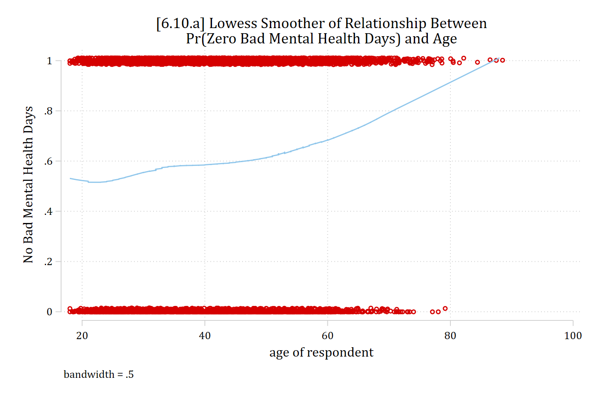
# 6.10.a - lowess for 0 or >0
gss <- gss |> mutate(mntlhlth0 = as.numeric(mntlhlth == 0))
low0 <- as.data.frame(lowess(gss$age, gss$mntlhlth0, f = 0.5, iter = 0))
ggplot(gss, aes(x = age, y = mntlhlth0)) +
geom_jitter(width = 0, height = .02, shape = 1, color = "red", alpha = .5) +
geom_line(data = low0, aes(x = x, y = y), color = "steelblue", linewidth = 1) +
labs(title = "[6.10.a] Lowess Smoother of Relationship Between\nPr(Zero Bad Mental Health Days) and Age",
x = "age of respondent", y = "No Bad Mental Health Days")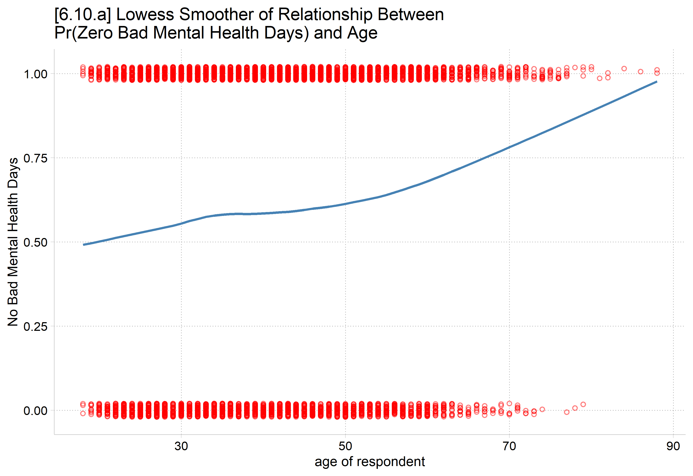
To double-check predictions and MEs are giving you what you want, helpful to use lowess or other exploratory techniques first. Here DV is binary, 1 = no bad mental health days.
*6.11.a - Plot probability of being in the never poor mental health group
* by gender. Use option predict(pr)
est restore mhmod(results mhmod are active now)qui margins woman, at(age=(18(2)90)) predict(pr)
marginsplot, recastci(rline) ciopts(lpat(dash) col(gs12)) ylab(0(.2)1) ///
plotopts(msym(i)) xlab(20(10)90) ///
title("[6.11.a] Predicted Probability of Never Having Any Bad Mental Healt
h Days") ///
ytitle("Pr(Zero Bad Mental Health Days)") xtitle("Age in Years")Variables that uniquely identify margins: age woman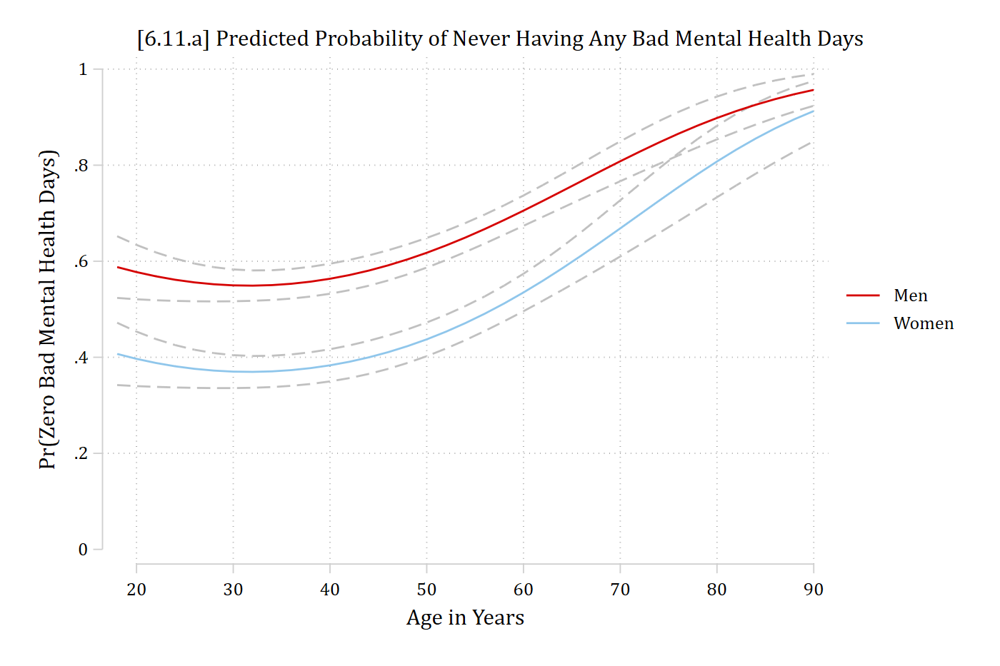
# 6.11.a - Plot probability of being in the never poor mental health group
# by gender. Use type = "zero"
plot_predictions(mhmod, by = c("age", "woman"), type = "zero",
newdata = datagrid(age = seq(18, 90, 2), woman = unique, grid_type = "counterfactual")) +
scale_x_continuous(breaks = seq(20, 90, 10)) +
scale_y_continuous(breaks = seq(0, 1, .2), limits = c(0, 1)) +
labs(title = "[6.11.a] Predicted Probability of Never Having Any Bad Mental Health Days",
x = "Age in Years", y = "Pr(Zero Bad Mental Health Days)", color = NULL, fill = NULL)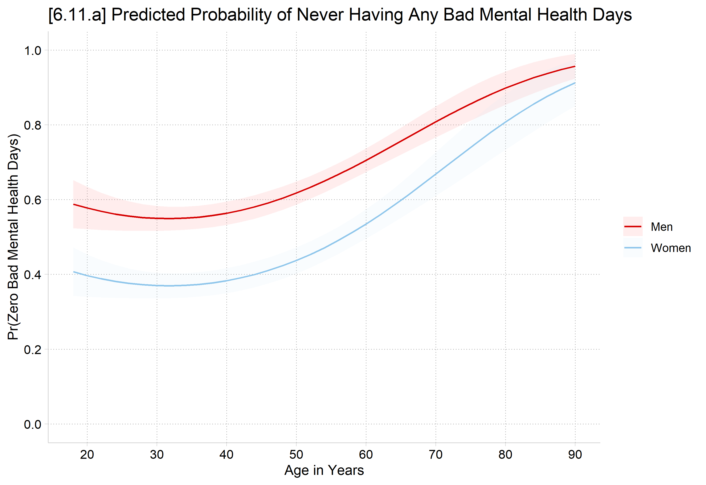
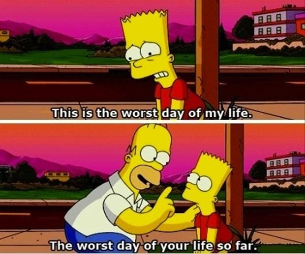
Marginal effects for inflation part of the model
*AMEs for Pr(Always Zero Group). Use option predict(pr)
mecompare woman age, model(mhmod) amount(sd) predict(pr)Predicting: Pr(mntlhlth=0)
Marginal effects (N_mhmod=5036)
| ME # Estimate SE P>|z|
---------------------------------+---------------------------------------
woman |
Women - Men |
mhmod | 1 -0.177 0.017 0.000
---------------------------------+---------------------------------------
age + SD (centered) |
mhmod | 2 0.053 0.009 0.000# AMEs for Pr(Always Zero Group). Use type = "zero"
avg_comparisons(mhmod, variables = list(woman = "reference", age = sd(gss$age)),
type = "zero")
Term Contrast Estimate Std. Error z Pr(>|z|) S 2.5 % 97.5 %
age +13.060088815 0.053 0.00934 5.68 <0.001 26.1 0.0347 0.0713
woman Women - Men -0.177 0.01717 -10.31 <0.001 80.4 -0.2106 -0.1433
Type: zeroWomen have a 0.18 lower predicted probability of never having bad mental health days, compared to men
A standard deviation increase in age (about 13 years) is associated with about a 5 percentage point increase in never having bad mental health days
Etc.
Predictions and marginal effects for the rate or probability of specific outcomes
- Remember the zero-inflated model coefficients are only for those who have non-zero counts
- Similarly, for predictions and MEs for the count part of the model, it is often of most interest to obtain predictions for only the count part of a zero-inflated model reflecting only those who have non-zero counts
- This is the unique thing the zero-inflated model can do
- Here too it is useful to use lowess or similar before jumping to model predictions and MEs just to double-check you are estimating what you want
*6.10.d - lowess for the non-zero counts
lowess mntlhlth age if mntlhlth != 0, bw(0.4) jitter(3) ///
title("[6.10.d] Lowess Smoother of Relationship Between" ///
"# of Bad Mental Health Days and Age")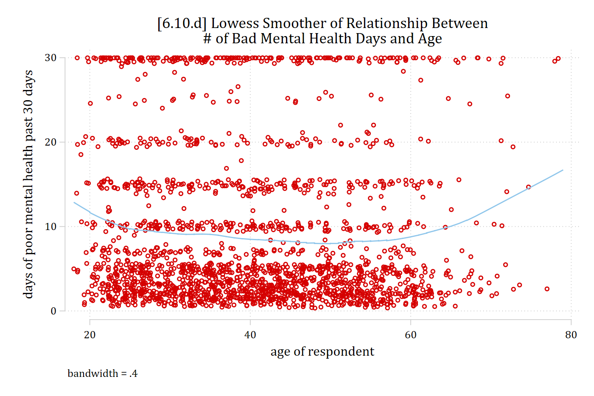
# 6.10.d - lowess for the non-zero counts
nonzero <- gss |> filter(mntlhlth != 0)
low1 <- as.data.frame(lowess(nonzero$age, nonzero$mntlhlth, f = 0.4, iter = 0))
ggplot(nonzero, aes(x = age, y = mntlhlth)) +
geom_jitter(width = .5, height = .5, shape = 1, color = "red", alpha = .5) +
geom_line(data = low1, aes(x = x, y = y), color = "steelblue", linewidth = 1) +
labs(title = "[6.10.d] Lowess Smoother of Relationship Between\n# of Bad Mental Health Days and Age",
x = "age of respondent", y = "days of poor mental health past 30 days")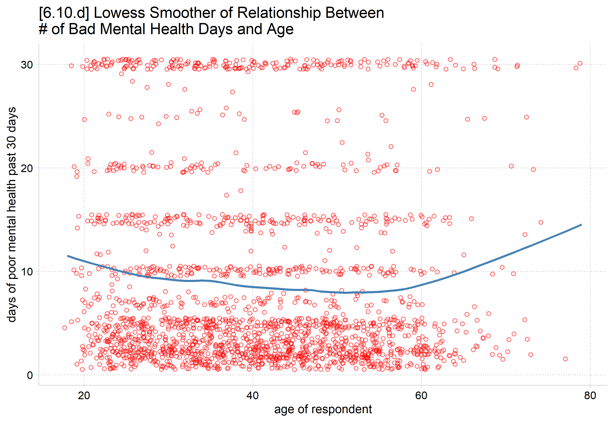
This is the general relationship we should expect to observe from the count part of the model, based only on observations with observed counts
Predictions for observed counts in Stata and R
- Use a custom expression( ) on margins; pass this to mecompare in a marginsopt( )
- Where the equation( ) is named by the DV
*6.11.b - Plot predicted rates including only those with observed counts
** Use custom expression(); equation() is named by DV
est restore mhmod(results mhmod are active now)qui margins woman, at(age=(18(2)90)) ///
expression(exp(predict(equation(mntlhlth))))
marginsplot, ylab(0(5)25) recastci(rline) ciopt(lpat(dash) col(*.3)) ///
plotopts(msym(i)) xlab(20(10)90) ///
title("[6.11.b] Predicted number of bad mental health days") ///
subtitle("Only among those with some bad mental health days", size(*.8)) /
//
ytitle("# of bad mental health days") xtitle("Age in years") ///
legend(size(vsmall))Variables that uniquely identify margins: age woman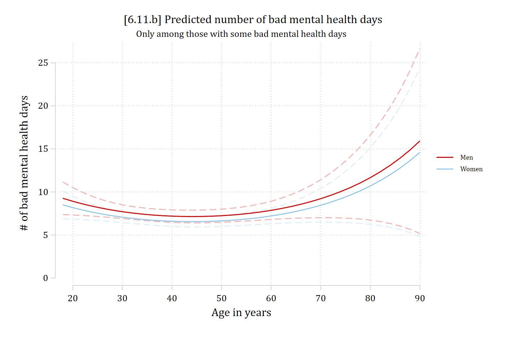
- Use the type = “count” option on plot_predictions and avg_comparisons
# 6.11.b - Plot predicted rates including only those with observed counts
# Use type = "count"
plot_predictions(mhmod, by = c("age", "woman"), type = "count",
newdata = datagrid(age = seq(18, 90, 2), woman = unique, grid_type = "counterfactual")) +
scale_x_continuous(breaks = seq(20, 90, 10)) +
scale_y_continuous(breaks = seq(0, 25, 5)) +
coord_cartesian(ylim = c(0, 25)) +
labs(title = "[6.11.b] Predicted number of bad mental health days",
subtitle = "Only among those with some bad mental health days",
x = "Age in years", y = "# of bad mental health days", color = NULL, fill = NULL)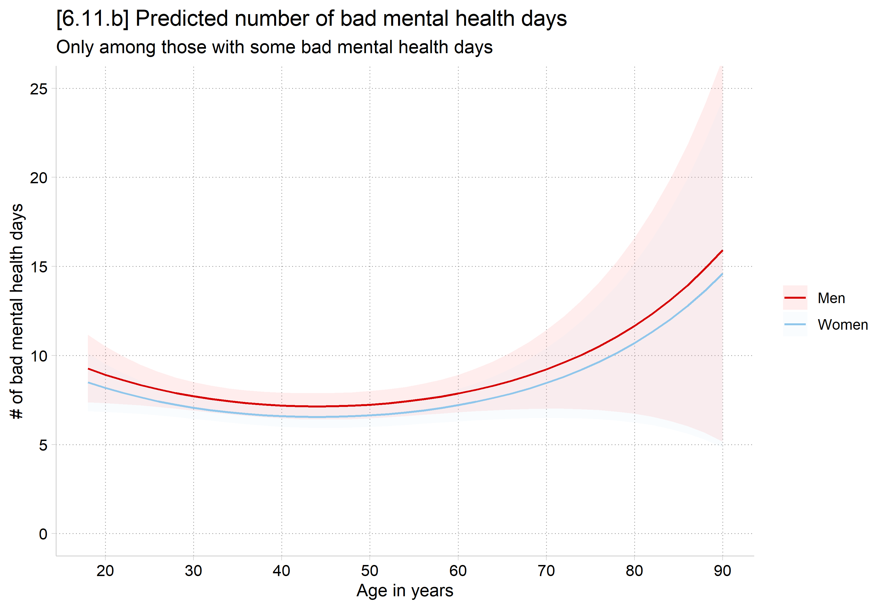
Marginal effects for count part of the model
*AMEs for predicted rate *among those who are not always zeroes*
** Use custom expression(); equation() is named by DV
mecompare woman age college, model(mhmod) amount(sd) ///
marginsopt(expression(exp(predict(equation(mntlhlth)))))Predicting: exp(predict(equation(mntlhlth)))
Marginal effects (N_mhmod=5036)
| ME # Estimate SE P>|z|
---------------------------------+---------------------------------------
woman |
Women - Men |
mhmod | 1 -0.636 0.414 0.124
---------------------------------+---------------------------------------
age + SD (centered) |
mhmod | 2 -0.172 0.265 0.516
---------------------------------+---------------------------------------
college |
College Deg - No Col Deg |
mhmod | 3 -2.710 0.395 0.000# AMEs for predicted rate *among those who are not always zeroes*
# Use type = "count"
avg_comparisons(mhmod, variables = list(woman = "reference", age = sd(gss$age),
college = "reference"), type = "count")
Term Contrast Estimate Std. Error z Pr(>|z|) S 2.5 % 97.5 %
age +13.060088815 -0.172 0.265 -0.649 0.517 1.0 -0.691 0.347
college College Degree - No Col Degree -2.710 0.395 -6.863 <0.001 37.1 -3.484 -1.936
woman Women - Men -0.636 0.414 -1.539 0.124 3.0 -1.447 0.174
Type: countAmong those who report some bad mental health days…
- there is no difference in the number of bad mental health days reported between men and women
- overall, there is no effect of age on the number of bad mental health days
- having a college degree is associated with 2.7 fewer poor mental health days each month
Predictions and marginal effects on the rate for all observations
- Remember that the results above are for those who report some bad mental health days (i.e., have non-zero counts for the DVs)
- The default in both Stata and R is to predict for the full sample, which is a combination of both the always and sometimes zero groups
- These can be interpreted as you would interpret rates of predictions for specific outcomes from negative binomial or Poisson
- This represents effects in the whole population/sample, including the always zeroes
- This mixes the always zeroes and the sometimes zeroes
- Personally, I don’t see much advantage here over a regular negative binomial model as predictions will be very similar in the ZINB (Allison 2012)
- But, maybe want to show this as baseline / overall effect, and then break down effects on zero/not (inflation equation) and on observed counts (count equation)
*6.11.c - Plot predicted rates for everyone, including the zeroes
* This is margins default
est restore mhmod(results mhmod are active now)qui margins woman, at(age=(18(2)90))
marginsplot, ylab(0(1)8) recastci(rline) ciopt(lpat(dash) col(*.3)) ///
plotopts(msym(i)) xlab(20(10)90) ///
title("[6.11.c] Predicted number of bad mental health days") ///
subtitle("Pooling over zeroes and observed counts", size(*.8)) ///
ytitle("# of bad mental health days") xtitle("Age in years") ///
legend(size(vsmall))Variables that uniquely identify margins: age woman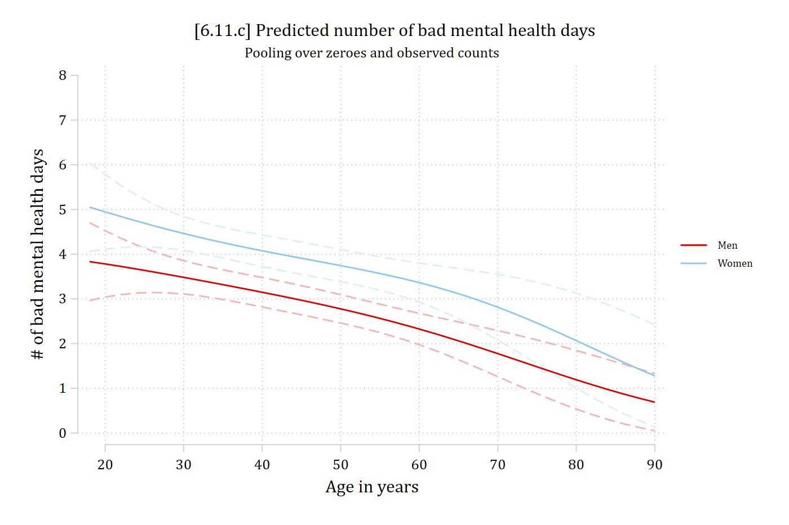
# 6.11.c - Plot predicted rates for everyone, including the zeroes
# This is the default
plot_predictions(mhmod, by = c("age", "woman"),
newdata = datagrid(age = seq(18, 90, 2), woman = unique, grid_type = "counterfactual")) +
scale_x_continuous(breaks = seq(20, 90, 10)) +
scale_y_continuous(breaks = 0:8) +
coord_cartesian(ylim = c(0, 8)) +
labs(title = "[6.11.c] Predicted number of bad mental health days",
subtitle = "Pooling over zeroes and observed counts",
x = "Age in years", y = "# of bad mental health days", color = NULL, fill = NULL)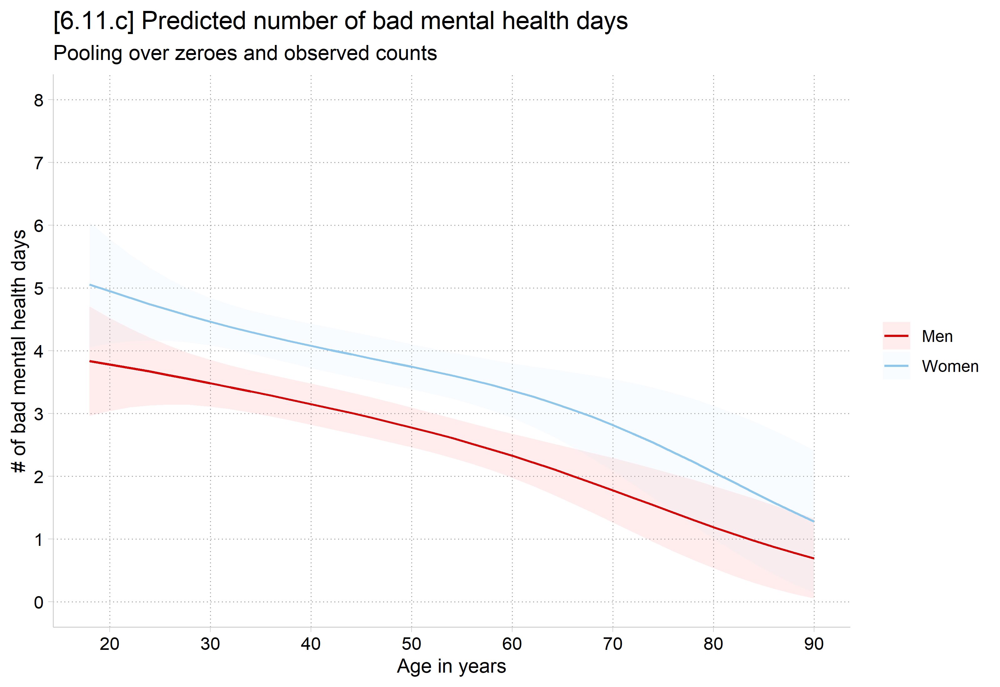
Marginal effects on the rate for all observations
*AMEs for predicted rate for all observations (mixes the always and sometimes
zeroes)
** The default
mecompare woman age, model(mhmod) amount(sd)Predicting: Predicted number of events
Marginal effects (N_mhmod=5036)
| ME # Estimate SE P>|z|
---------------------------------+---------------------------------------
woman |
Women - Men |
mhmod | 1 0.991 0.205 0.000
---------------------------------+---------------------------------------
age + SD (centered) |
mhmod | 2 -0.521 0.132 0.000# AMEs for predicted rate for all observations (mixes the always and sometimes zeroes)
# The default
avg_comparisons(mhmod, variables = list(woman = "reference", age = sd(gss$age)))
Term Contrast Estimate Std. Error z Pr(>|z|) S 2.5 % 97.5 %
age +13.060088815 -0.521 0.132 -3.95 <0.001 13.6 -0.780 -0.262
woman Women - Men 0.991 0.205 4.83 <0.001 19.5 0.589 1.393
Type: responseOn average, across the entire sample, women report about one more bad mental health day than do men (ME = 0.991)
Considering both observed zeroes and observed counts, the overall average effect of a standard deviation increase in age is a 0.521 reduction in bad mental health days
*Note the differences in the results compared to the MEs on the count among those who report some bad mental health days